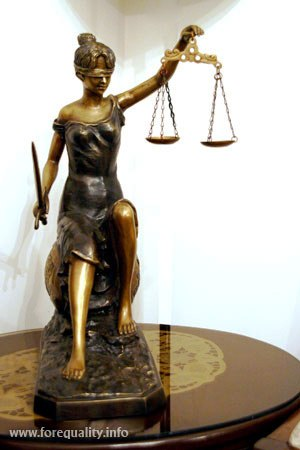
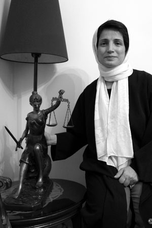

|
|
نسرین ستوده در پاسداشت زحماتش: عدالت، بالاتر از شمشیر ایستاده است!
يكشنبه7 مهر 1387
تغییر برای برابری- تندیس فرشته عدالت به پاس تلاشهای نسرین ستوده در دفاع از بسیاری از فعالان جنبش زنان، طی مراسمی به وی اهدا شد.
در این مراسم که با همت کمیته مادران کمپین یک میلیون امضا برگزار شد و در آن تعداد زیادی از فعالان جنبش زنان از گروه های مختلف از جمله مادران صلح، کانون زنان ایرانی، اعضای کمیته های مختلف کمپین یک میلیون امضا، دفتر تحکیم وحدت و نیز چند تن دیگر از فعالان جنبش زنان حضور داشتند، تندیس فرشته عدالت به پاس تلاش هایی که نسرین ستوده در دفاع از فعالان زن انجام داده به وی اهدا شد.

هفته گذشته کمیته بین المللی حقوق بشر ایتالیا نیز اعلام کرد که نخستین جایزه بین المللی خود را به این وکیل جسور جنبش زنان اختصاص داده است.
نسرین ستوده در مراسم دیروز از حضور و توجه فعالان زن در مراسم ، قدردانی کرد و با اشاره به تندیسی که به وی اهدا شده گفت : تلاش همه ما برای این است که عدالت، مثل این مجسمه بالاتر از شمشیر بایستد.
ستوده همچنین با اشاره به تجربه های تلخ زنان در دهه های گذشته با مروری بر آنها گفت : در دهه شصت، زنان بدترین و تلخ ترین دوران را گذراندند. همه شما تجربه هایتان از من بیشتر است و بهتر می دانید که هژمونی تحقیر و توهین به زنان حتا حریم های خصوصی را نیز درنوردیده بود. دوره شصت دورانی بود که مردم در مهمانی های خصوصی شان نیز برای شوخی و خنده به تحقیر زن مشغول می شدند.

یک دهه گذشت تا ما خود را کم کم پیدا کنیم و فعالیت ها و تلاش های همه شما بوده که امروز و در سال 87، می توانیم خواسته هایمان را روشن و واضح مطرح کنیم و هیچ چیز جلودارمان نباشد. حتا زندان و تهدید و احضار و ممنوع الخروج شدن.
وی سپس با شوخی یک یک حاضران در نشست را که طی سالهای گذشته برای جنبش زنان هزینه پرداخت کرده بودند و او نیز وکالت شان را برعهده گرفته بود نشان داد: پروین اردلان، خدیجه مقدم، دلارام علی، امیر یعقوبعلی، بهاره هدایت، راحله عسگری زاده، نسیم خسروی، ناهید جعفری... در همین جمع، شاهدان زنده این ادعایند.
نسرین ستوده با اشاره به اینکه خودش نیز دو پرونده باز در دادگاه دارد، ادامه داد: علی رغم همه این فشارها، ما باز هم دور هم جمع می شویم، از هم انرژی می گیریم و مطمئنیم که راه را ادامه خواهیم داد. برای شخص من دوستی با شما افتخاری بوده که هم از شما آموخته ام و هم جایزه کمیته حقوق بشر ایتالیا به خاطر دفاع از شما بوده است. بنابراین من باید به شما تبریک بگویم.واقعیت این است که این هدیه، با ارزش تر از هر جایزه ای است زیرا از جانب دوستان عزیزم آن را دریافت کرده ام.
در ادامه این مراسم خدیجه مقدم ، از فعالان کمیته مادران کمپین یک میلیون امضا، به تاثیر تلاش حقوق دانانی چون نسرین ستوده در همه گیر شدن اطلاعات حقوقی مربوط به زنان ، یاد کرد و گفت : وقتی با بسیاری از افراد جامعه برای جمع آوری امضا صحبت می کنم، به من می گویند که آیا شما وکیل یا حقوق دانید؟ این به خاطر تلاش امثال خانم ستوده است در آموزش حقوق زنان به همه ما.
شهلا فروزان فر نیز از گروه مادران صلح حضور وکلایی مثل نسرین ستوده را باعث افتخار و قوت جنبش زنان دانست.محبوبه کرمی نیز با یادآوری تلاشهای نسرین ستوده در پرونده اش از وی و سایر فعالان زن که در زمان بازداشت وی، خانواده و بویژه مادرش را تنها نگذاشتند تشکر کرد. ناهید میرحاج نیز از مادران کمپین گفت خاطره چند ساعت هم سلولی بودن با نسرین ستوده ازیاد رفتنی نیست.